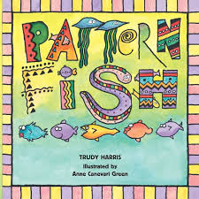

Resources
Pattern Fish (Harris, 2000)

"Pattern Fish" is a book that teaches a wide range of repeating patterns through descriptions and visual images. This literature serves as an excellent tool for integrating mathematical concepts into the classroom. By exploring the patterns in the book, children can develop a deeper understanding of repetition, sequencing, and predictability, which are foundational skills in mathematics. Literature like "Pattern Fish" makes abstract mathematical concepts tangible and accessible, especially for young learners. Engaging with the book’s patterns allows students to visualize and physically represent mathematical ideas, fostering a connection between visual arts and numeracy.
Paige (2021). Dramatising the S and M in STEM
This paper, along with the entire issue in which it is published, shares excellent ideas and arguments for teaching Science and Mathematics through Drama. Although it focuses on teaching older children science and science ethics concepts, the ideas are easily adaptable to many age groups and subject areas and are very inspiring.
Visual Musical Minds Rhythm Reading Videos
These videos serve as engaging game-like activities that focus on making music and work effectively with whole class participation. They teach powerfully by connecting visual and aural cues while playing along to enjoyable tunes. These videos could serve as the entire curriculum for studying rhythmic notation and are easily inserted at the beginning of a music (or any subject) lesson for 5-10 minutes. They sufficiently teach rhythm reading for any age from 3 up to and including adulthood. I have recently had success with these in a combined 3-6 year old music class. The enthusiasm generated could also be leveraged for a deeper study into rhythms, breaking them down, and teaching many parts of the mathematics curriculum at various year levels (particularly patterns and fractions). The words used in the videos (mostly "ti" and "ta") are simple, effective for building phonic recognition speed in literacy.
Criticisms:
- The series loses structural coherence after around 12 videos.
- No new content has been added in years.
- Complex rhythms are introduced very quickly in the 10th and 11th videos.
- There are plenty of more complex rhythms that could be addressed; the video series could easily be twice as long.
Notation Cards
link to cards.pdfMany versions of these cards exist. They are excellent for pre-writing students to arrange and experiment with both rhythms and patterns. More complex note values can be easily added.